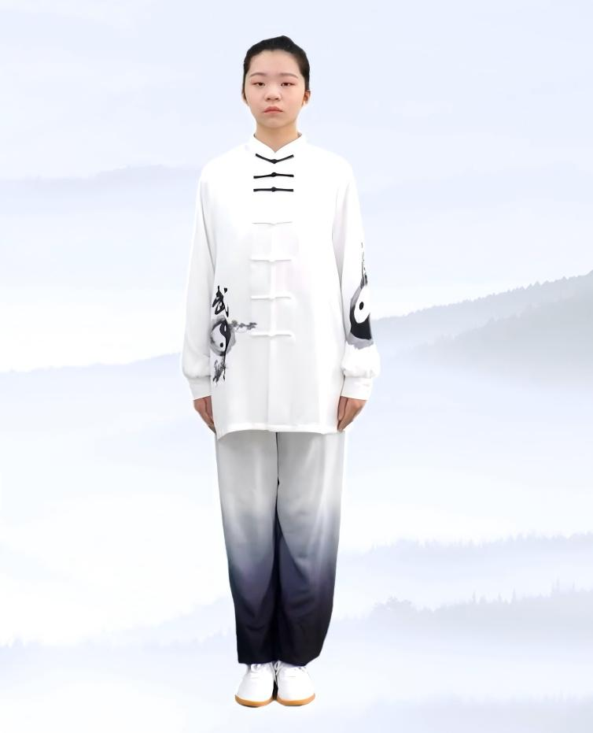
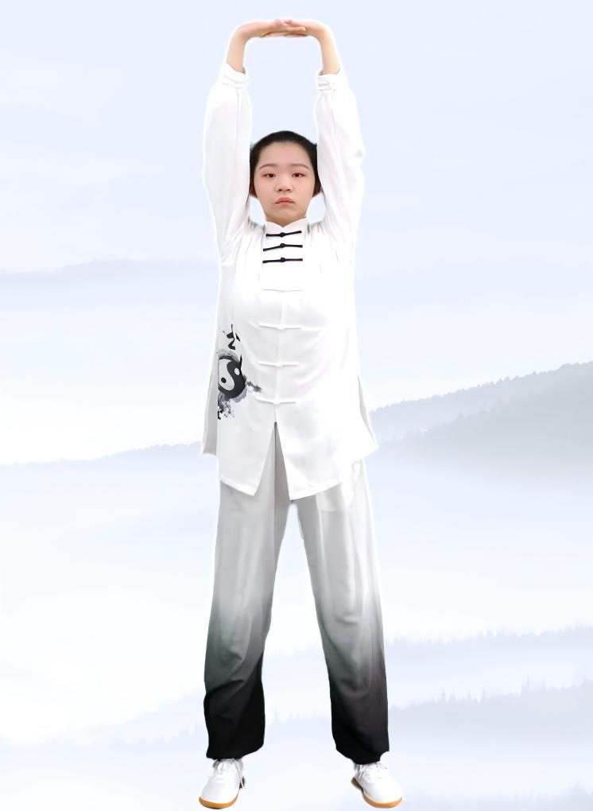
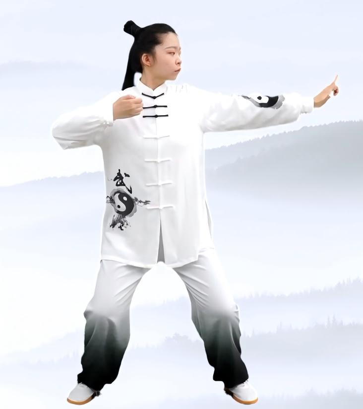
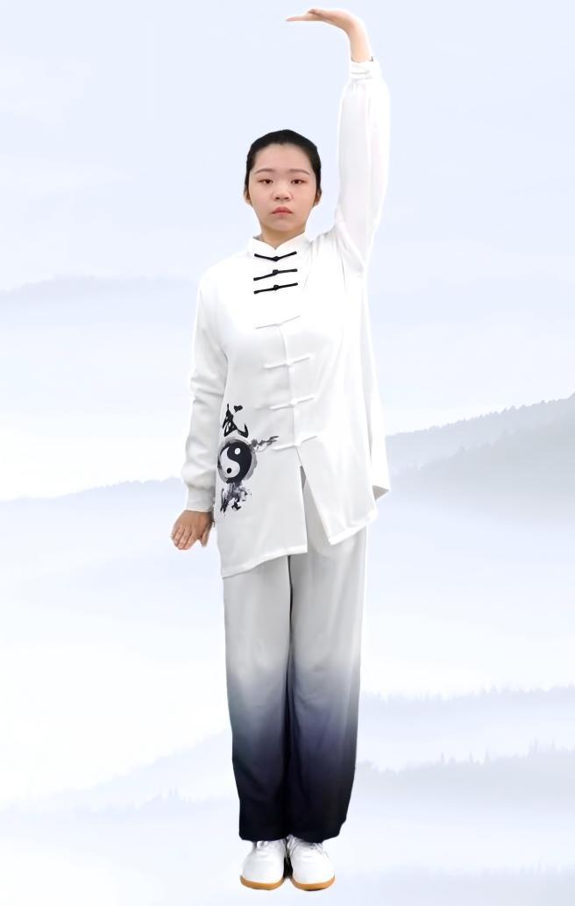
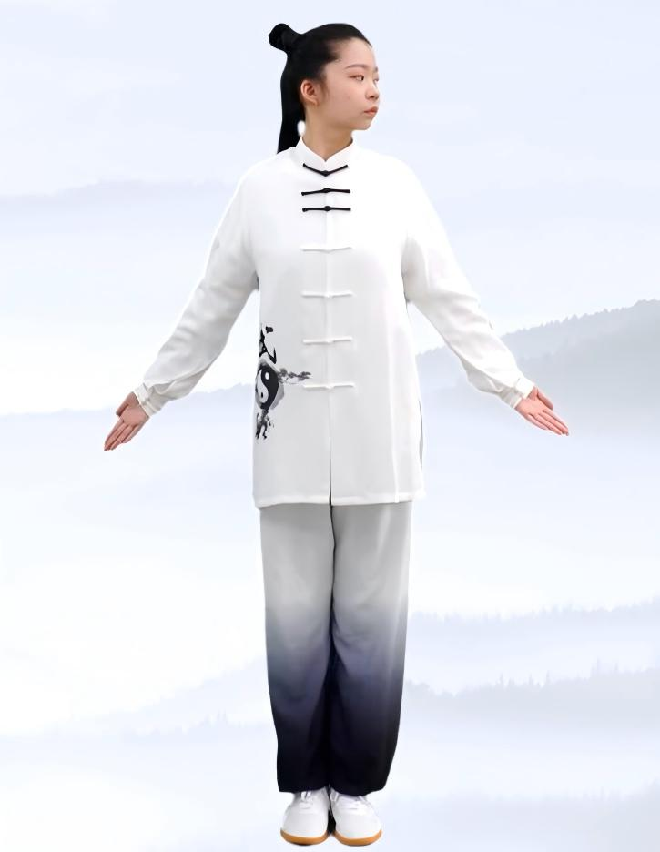
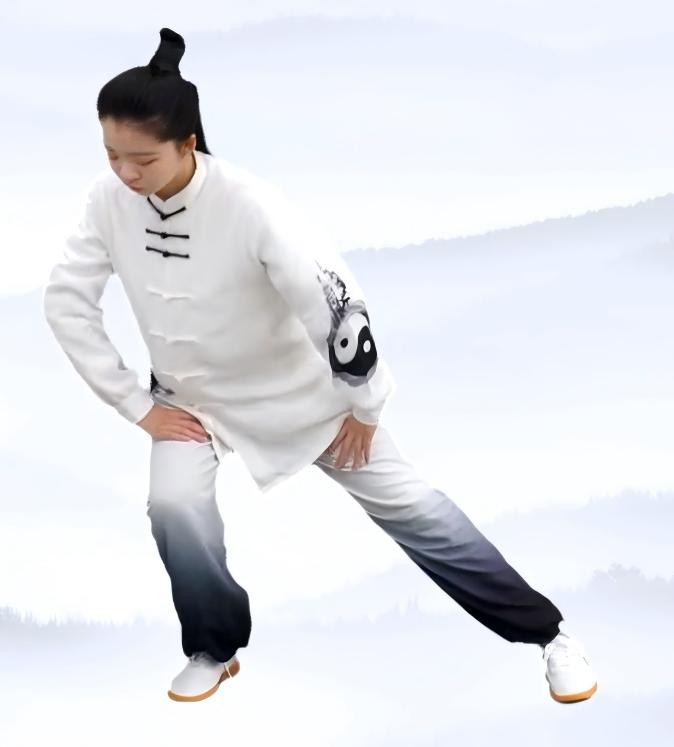
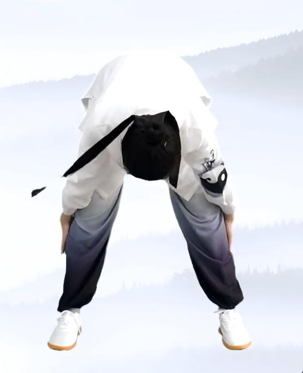
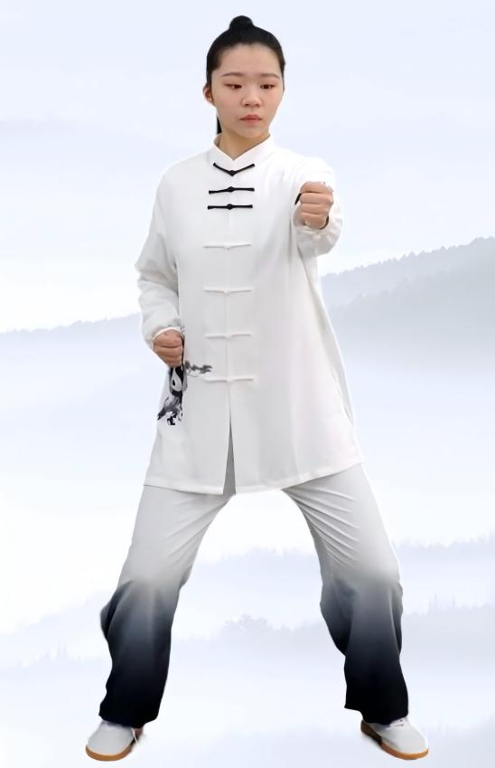
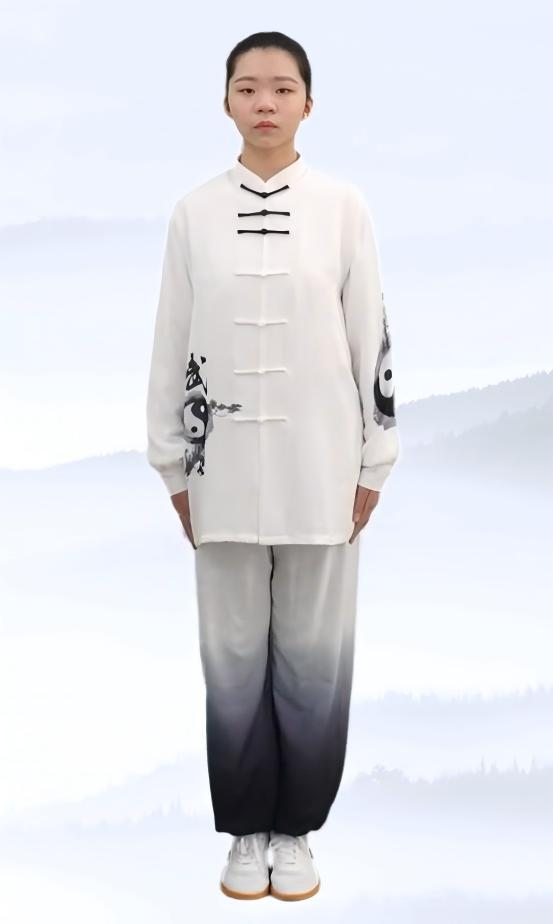

Smart Ba Duan Jin
Page 1 / 11
Fitness Qigong
《八段锦》Masterclass
Today's Learning Focus:
- 8 Essential Movements: Mastering traditional forms.
- Breath Sync: Coordinating rhythm and posture.
- Body Awareness: Correcting common mistakes.
Experience the ancient wisdom of health preservation. This interactive course will guide you step-by-step through the legendary 800-year-old wellness routine.
Preparation Posture (预备式)
Instructions:
- Stand naturally with feet shoulder-width apart.
- Arms relaxed at the sides, eyes looking forward.
- Calm your mind and regulate your QiQi (Chi) refers to the vital life force or energy flow in traditional Chinese medicine..
🎧 Audio Guide:

Ensure you are in a quiet place and your body is relaxed. Click Next Page to begin.
Section 1: Two Hands Lift Up the Sky(两手托天理三焦)
Steps Breakdown:
- Rotate arms inward and lower slightly.
- Lift both palms upward to chest level.
- Push palms upward; straighten elbows and tuck chin. This regulates the Triple BurnerThe Triple Burner (Sanjiao) is a concept in Chinese Medicine referring to the passage for fluid and energy distribution in the torso..
- Lower arms to sides; relax the body.
🎧 Audio Guide:

⚠️ Posture Self-Check
Avoid: Shrugging shoulders or forgetting to look up.
Correct: Keep shoulders relaxed down while pushing palms up. Tilt head back to see your hands.
Interactive Practice
Inhale (Push Up)
Check for understanding: Where should you feel the stretch?
Section 2: Drawing the Bow (左右开弓似射雕)
Steps Breakdown:
- Shift your weight and step into a wider stance.
- Cross your hands in front of your chest.
- Pull one hand back to the shoulder while pushing the other palm forward, as if drawing a bow.
- Keep your shoulders relaxed and sink your QiQi (Chi) refers to the vital life force. Sinking Qi means keeping your center of gravity low and stable..
🎧 Audio Guide:

⚠️ Posture Self-Check
Avoid: Leaning your torso forward or raising your shoulders.
Correct: Keep your torso upright and straight. Open your chest fully while pulling the "bowstring".
Interactive Practice
Inhale (Draw Bow)
Check for understanding: What is the correct posture for your torso in this movement?
Section 3: Single Arm Lift (调理脾胃须单举)
Steps Breakdown:
- Extend your knees and stand upright.
- Lift one palm upward to the sky while pressing the other palm downward.
- Shift your weight smoothly.
- This opposing stretch regulates the Spleen and StomachIn TCM, the spleen and stomach are the root of digestion and nutrient absorption..
🎧 Audio Guide:

⚠️ Posture Self-Check
Avoid: Bending your elbows too much or leaning to one side.
Correct: Feel the opposing forces stretching up and down simultaneously. Keep your spine aligned.
Interactive Practice
Inhale (Stretch Up & Down)
Check for understanding: What should your two hands be doing?
Section 4: Looking Backward (五劳七伤往后瞧)
Steps Breakdown:
- Stand up straight with feet parallel.
- Slowly rotate your arms outward, palms facing diagonally backward.
- Turn your head gently to look backward, pausing briefly.
- This helps prevent the Five Strains and Seven InjuriesA traditional Chinese term for various physical and emotional fatigues or internal imbalances caused by overwork or negative emotions..
🎧 Audio Guide:

⚠️ Posture Self-Check
Avoid: Turning your entire body (shoulders and hips) to look back.
Correct: Keep your chest facing forward. The twist should primarily happen in your neck and upper spine.
Interactive Practice
Inhale (Look Back)
Check for understanding: Which part of your body is the primary focus of the twist?
Section 5: Sway the Head and Shake the Tail (摇头摆尾去心火)
Steps Breakdown:
- Sink into a horse stance with hands resting on your thighs.
- Lower your torso and twist from side to side.
- Swing your head and torso in a circular, natural motion.
- This movement effectively calms the Heart FireIn TCM, "Heart Fire" refers to excess stress, anxiety, or restlessness. This movement helps release that tension..
🎧 Audio Guide:

⚠️ Posture Self-Check
Avoid: Moving only your neck while keeping your waist stiff.
Correct: The swaying motion must originate from your waist and tailbone, traveling smoothly up your spine to your head.
Interactive Practice
Exhale (Sway Down)
Check for understanding: Where should the swaying motion originate?
Section 6: Two Hands Hold the Feet (两手攀足固肾腰)
Steps Breakdown:
- Stand straight with legs together. Raise arms upward.
- Keep legs straight, bend forward from the waist.
- Slide both palms down your legs toward your feet.
- Rise smoothly. This strongly strengthens the lower back and KidneysIn Chinese Medicine, the kidneys store vital essence and govern the health of bones and the lower back..
🎧 Audio Guide:

⚠️ Posture Self-Check
Avoid: Bending your knees excessively or forcing yourself to touch your toes if you lack flexibility.
Correct: Keep your legs straight but not forcefully locked. Bend from the hips, and only go as far as your hamstrings comfortably allow.
Interactive Practice
Exhale (Bend Down)
Check for understanding: What should you do if you cannot touch your toes?
Section 7: Clench Fists and Glare (攒拳怒目增气力)
Steps Breakdown:
- Sink into a stable horse stance.
- Punch one fist forward slowly but with internal tension.
- Perform an Angry GazeGlaring widely stimulates the liver meridian, helping to release pent-up frustration and stress..
- Keep your supporting arm steady at the waist to boost inner strength.
🎧 Audio Guide:

⚠️ Posture Self-Check
Avoid: Punching loosely or blinking during the punch.
Correct: Punch with intention (like moving through water) and maintain a wide, focused stare to stimulate the liver meridian.
Interactive Practice
Exhale (Punch Forward)
Check for understanding: Why do we use an "angry gaze" in this movement?
Section 8: Heel Lifting (背后七颠百病消)
Steps Breakdown:
- Stand upright with your feet together and arms relaxed.
- Lift both heels upward as high as comfortable, keeping your balance.
- Drop both heels lightly to the ground to produce a gentle vibration.
- This creates a resonance to Shake off illnessesIn TCM, this gentle vibration helps clear blockages in the meridians and stimulates the immune system..
🎧 Audio Guide:

⚠️ Posture Self-Check
Avoid: Slamming your heels down violently, which can jar your brain or spine.
Correct: Drop them with a controlled release—firm enough to feel a vibration, but gentle enough to be completely safe.
Interactive Practice
Inhale (Lift Heels)
Check for understanding: What is the correct way to perform the heel drop in this final section?
🎉 Congratulations!
You've Completed the Ba Duan Jin Masterclass
📖 Key Takeaways
- Breathe: Use slow, stable breathing to support every movement.
- Align: Focus on body alignment rather than speed or intensity.
- Relax: Keep the shoulders relaxed and maintain a smooth weight shift.
- Progress: Practice each section separately before combining the sequence.
🌿 Wisdom of Qigong
"Where the mind goes, the Qi follows." (意到气到)
Ba Duan Jin is a moving meditation. Consistency is your greatest teacher. Dedicate just 15 minutes a day, and your body will thank you.
Reflection 1: Which feature helped you most?
Reflection 2: How confident are you to practice alone?
Images and instructional content adapted from original Ba Duan Jin teaching materials.
Used with permission for educational purposes.